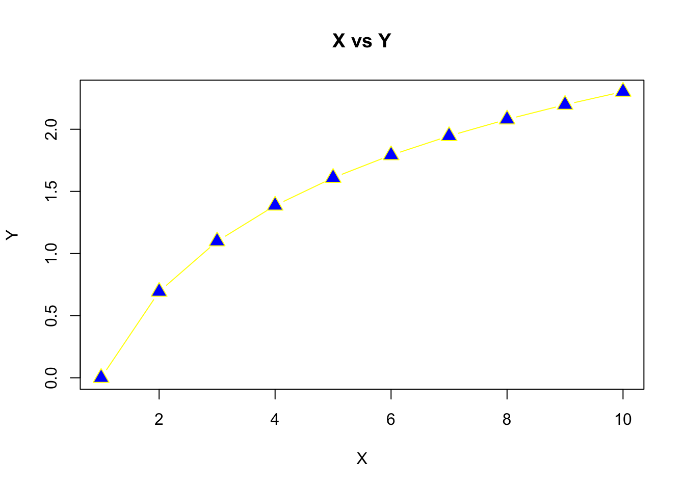

1 Customizing R Base Plots

R has a plethora of plotting packages, tools, and techniques. Generally speaking, base R graphs aren’t as popular amongst advanced R users as others (e.g. ggplot). That being said, R base graphing offers a variety of styling techniques and unique customization. The base R plotting methods will offer a solid foundation before we learn more about the aforementioned ggplot.
Boxplots, histograms, pie charts, bar charts, and scatter plots are readily available and customizable in the base R plotting package. We can customize and style colors, text, line types, plotting symbols, line thicknesses, symbol size, and much more.
1.1 Expanding on Basic Plots in R
Variable Assignment & Operations
## [1] 7## [1] 9## [1] 97.5## [1] 1 2 3 4 5 6 7 8 9 10 11 12 13 14 15 16 17 18 19 20## [1] 4.000000 3.500000 3.333333 3.250000 3.200000 3.166667 3.142857 3.125000
## [9] 3.111111 3.100000 3.090909 3.083333 3.076923 3.071429 3.066667 3.062500
## [17] 3.058824 3.055556 3.052632 3.050000
Now let’s add in some extra arguments to the plot function to make it prettier
plot(x=X,y=Y, type = "b", pch=c(24), col = 'blue', bg='yellow', cex = 1.6, xlab = "X", ylab = "Y",
col.lab = "orange", lwd=1.4, lty=2, main = "X vs Y")plot() Argument |
Definition |
|---|---|
type |
type of plot - p stands for points |
pch |
plotting ‘character’, i.e., symbol to use |
col |
color |
bg |
background color (only applicable for pch’s between 21:25) |
cex |
size of the points |
xlab |
x label |
ylab |
y label |
col.lab |
x and y label color |
lwd |
line width |
lty |
line type |
main |
title of the plot |
For more argument definitions, use the help() function or ? function like so - help(plot) or ?plot. Multiple options may pop up. This occurs when you have two functions from different packages with the same name. In this case, the plot() function we are using is from the base package.
1.1.1 Adding to a Plot
We can add additional items to a particular plot. Some of these items might be…
| Function | Definition |
|---|---|
legend |
adds a legend to a plot |
lines |
connects points sequentially with lines (added to a plot) |
points |
plots points (adds to a plot) |
segments |
add lines to a plot (between pairs of points) |
text |
add text to a plot |
legend |
add a legend to a plot |
abline |
add a line to a plot by specifying its slope and intercept |
title |
title can also be added outside of the function you use. This is necessary when we want an overarching title for multiple plots in one figure. |
Let’s use our previous example but go about plotting it a different way to show how it works.
# plot our X and Y as a line plot
plot(x=X,y=Y, type = "l", col='blue', xlab = "X", ylab = "Y",col.lab = "orange", lwd=1.4, lty=2, main = "X vs Y")
# add points to the line via the points function
points(x=X, y=Y, pch=c(24), col = 'blue', bg='yellow', cex = 1.6)
# add a vertical line at 3.4
abline(v=10)
# add a legend
legend(x = "topright", legend=c("my points"), pch=c(24), col = 'blue', pt.bg='yellow')
Let’s add in another
plot(1:25, 1:25, xlab="",ylab="",pch=1:25,col=1:25,cex=2)
grid(lty=1, col="gray90")
points(1:25, 1:25, xlab="",ylab="",pch=1:25,col=1:25,cex=2)
title("Plotting symbol, line type, & color codes")
legend("topleft", legend=1:6, lty=1:6, lwd=1.5, ncol=2, bg="gray95")
legend("bottomright", legend=1:8, col=1:8, ncol=3, pch=19, bg="gray95")
1.2 Barplots, Boxplots, Pie Charts
We’re going to create a fake dataset of those who are infected by the coronavirus. Let’s do so using the sample() function.
# Create a random sample of the 3 types - Susceptible, Infected and Recovered
InfStatus <- factor(sample(c("Susceptible", "Infected", "Recovered"),size = 50, replace = TRUE))
I <- table(InfStatus)
I## InfStatus
## Infected Recovered Susceptible
## 17 19 14# Now let's make a random sample of 3 genotypes (RR, Rr, and rr)
Genotype <- factor(sample(c("RR", "Rr", "rr"), size = 50, replace = TRUE))
G <- table(Genotype)
G## Genotype
## rr Rr RR
## 14 15 21## InfStatus
## Genotype Infected Recovered Susceptible
## rr 6 3 5
## Rr 6 7 2
## RR 5 9 7Note - We turned the sample data info a factor to add levels (i.e. categories) of our test data.
# WITHOUT the factor
test <- sample(c("Susceptible", "Infected", "Recovered"),size = 50, replace = TRUE)
test## [1] "Susceptible" "Recovered" "Recovered" "Susceptible" "Recovered"
## [6] "Susceptible" "Infected" "Infected" "Susceptible" "Susceptible"
## [11] "Recovered" "Infected" "Susceptible" "Recovered" "Susceptible"
## [16] "Susceptible" "Recovered" "Recovered" "Infected" "Susceptible"
## [21] "Infected" "Infected" "Susceptible" "Recovered" "Susceptible"
## [26] "Infected" "Recovered" "Susceptible" "Recovered" "Susceptible"
## [31] "Recovered" "Recovered" "Recovered" "Infected" "Infected"
## [36] "Susceptible" "Infected" "Infected" "Infected" "Infected"
## [41] "Infected" "Infected" "Recovered" "Susceptible" "Susceptible"
## [46] "Infected" "Infected" "Susceptible" "Recovered" "Recovered"## [1] "character"# Now as a factor
test2 <- factor(sample(c("Susceptible", "Infected", "Recovered"),size = 50, replace = TRUE))
test2## [1] Infected Susceptible Susceptible Recovered Recovered Recovered
## [7] Infected Recovered Infected Recovered Susceptible Recovered
## [13] Recovered Infected Recovered Infected Susceptible Recovered
## [19] Recovered Recovered Susceptible Infected Recovered Infected
## [25] Recovered Infected Susceptible Susceptible Susceptible Susceptible
## [31] Infected Recovered Recovered Recovered Recovered Recovered
## [37] Recovered Susceptible Infected Susceptible Recovered Susceptible
## [43] Recovered Infected Recovered Recovered Infected Recovered
## [49] Infected Infected
## Levels: Infected Recovered Susceptible## [1] "factor"1.2.1 Combining Plots
R makes it easy to combine multiple plots into one overall graph, using either the par() function. With the par() function, you can include the option mfrow=c(nrows, ncols) to create a matrix of nrows x ncols plots that are filled in by row. The Additionally, we can control text size with cex - a number indicating the amount by which plotting text and symbols should be scaled relative to the default. 1=default, 1.5 is 50% larger, 0.5 is 50% smaller, etc. Here’s some more descriptions.
| option | description |
|---|---|
mfrow |
mfrow=c(nrows, ncols) - nrows x ncols plots that are filled in by row |
mar |
A numerical vector of the form c(bottom, left, top, right) which gives the number of lines of margin to be specified on the four sides of the plot |
oma |
A vector of the form c(bottom, left, top, right) giving the size of the outer margins in lines of text. |
bg |
background color |
cex |
magnification of text and symbols relative to default. |
cex.axis |
magnification of axis annotation relative to cex |
cex.lab |
magnification of x and y labels relative to cex |
cex.main |
magnification of titles relative to cex |
cex.sub |
magnification of subtitles relative to cex |
We can always list the par settings by entering par() in the console. Let’s use these par settings with our test data created above.
par(mfrow=c(2, 2), mar=c(3, 2, 2, 1), oma=c(0, 0, 3, 0), bg = "white") ## create plot array of 2 row x 2 columns
plot(InfStatus, ylim = c(0, 27)) # basic plot with y limit set as a range
box() # adds a box around the plot coded before this line
barplot(table(Genotype, InfStatus), ylim = c(0, 13), beside = TRUE, col = c("seagreen4", "coral", "dodgerblue2")) # barplot
box() # adds a box around the plot coded before this line
legend("topright", c("RR", "Rr", "rr"), fill = c("seagreen4", "coral", "dodgerblue2"), ncol = 1, cex = 0.75) # legend for the previous plot, which in this case is the barplot
boxplot(rnorm(50, mean = 15, sd = 3) ~ Genotype, col = c("seagreen4", "coral", "dodgerblue2")) # boxplot
pie(G, col = c("seagreen4", "coral", "dodgerblue2")) # pie plot
mtext("Basic R Plots with Test Genotype Data", outer = TRUE, cex = 1.5, font = 2) # main title
1.3 Tree Data
We’re going to download the TreeData.csv file from the course github using a direct method. We can use the download.file() function to do this.
download.file(url = "https://github.com/jsimkins2/geog473-673/tree/master/datasets/TreeData.csv", destfile = "/Users/james/Downloads/TreeData.csv" , mode='wb')
The url argument is the direct url of the file we wish to download. destfile is the destination file path + name - note that this is my relative path and that yours will look different. mode describes the method with whcih to write the file (wb can be used in most cases).
1.3.1 Loading the Dataset
# Our file location is our destfile argument above. For me, it's /Users/james/Downloads/TreeData.csv
treedat <- read.csv("/Users/james/Documents/Github/geog473-673/datasets/TreeData.csv")
treedat## tree spp season Infected dbh SapDepth BarkThick NobarkArea Heartwood
## 1 1 PICO Summer Yes 42.2 8.4 0.3 1359.2 483.1
## 2 2 ABLA Fall Yes 13.4 2.0 0.4 124.7 58.1
## 3 3 ABLA Summer No 13.1 1.5 0.3 122.7 70.9
## 4 4 PICO Spring No 15.0 4.1 0.2 167.4 32.2
## 5 5 POTR Winter Yes 14.2 3.6 0.0 158.4 38.5
## 6 6 POTR Winter Yes 20.0 5.9 0.0 314.2 52.8
## 7 7 ABLA Summer Yes 9.1 2.1 0.3 56.7 14.5
## 8 8 ABLA Spring No 9.2 2.5 0.5 52.8 8.0
## 9 9 ABLA Fall Yes 27.3 3.0 0.6 535.0 317.3
## 10 10 PICO Fall No 11.2 3.4 0.3 88.2 11.3
## 11 11 PICO Spring Yes 18.0 5.9 0.3 237.8 24.6
## 12 12 POTR Summer No 9.0 3.0 0.0 63.6 7.1
## 13 13 POTR Spring No 15.4 4.1 0.0 186.3 40.7
## 14 14 POTR Winter No 24.1 6.2 0.0 456.2 107.5
## 15 15 PICO Winter Yes 24.2 7.0 0.5 422.7 66.5
## 16 16 PIFL Fall No 14.4 4.2 0.5 141.0 19.6
## 17 17 PIFL Winter No 13.1 2.2 0.6 111.2 44.2
## 18 18 PIFL Summer Yes 21.5 5.1 0.6 323.7 80.1
## 19 19 PIFL Spring No 13.4 2.2 0.5 120.8 50.3
## 20 20 PIFL Fall Yes 16.2 3.5 0.5 181.5 52.8
## SapArea
## 1 876.1
## 2 66.6
## 3 51.8
## 4 135.2
## 5 119.9
## 6 261.3
## 7 42.2
## 8 44.8
## 9 217.7
## 10 76.9
## 11 213.2
## 12 56.5
## 13 145.5
## 14 348.7
## 15 356.3
## 16 121.4
## 17 67.0
## 18 243.5
## 19 70.5
## 20 128.6treedat is a data frame. As a reminder, a data frame is essentially a 2-dimensional array that contains a combination of vectors (columns of data) that are of the class; integer, numeric, character. This is different from a matrix which can only contain 1 type of data. In this case, we have some tree data that includes species of tree, season the data was collected, diameter of the tree, bark thickness, area of no bark, heartwood diameter, and sapwood diameter.

Let’s manipulate this dataframe to make it easier to work wtih.
# let's set the rownames equal to the tree column
treedat <- read.csv("/Users/james/Documents/Github/geog473-673/datasets/TreeData.csv",row.names='tree')
# print treedat
treedat## spp season Infected dbh SapDepth BarkThick NobarkArea Heartwood SapArea
## 1 PICO Summer Yes 42.2 8.4 0.3 1359.2 483.1 876.1
## 2 ABLA Fall Yes 13.4 2.0 0.4 124.7 58.1 66.6
## 3 ABLA Summer No 13.1 1.5 0.3 122.7 70.9 51.8
## 4 PICO Spring No 15.0 4.1 0.2 167.4 32.2 135.2
## 5 POTR Winter Yes 14.2 3.6 0.0 158.4 38.5 119.9
## 6 POTR Winter Yes 20.0 5.9 0.0 314.2 52.8 261.3
## 7 ABLA Summer Yes 9.1 2.1 0.3 56.7 14.5 42.2
## 8 ABLA Spring No 9.2 2.5 0.5 52.8 8.0 44.8
## 9 ABLA Fall Yes 27.3 3.0 0.6 535.0 317.3 217.7
## 10 PICO Fall No 11.2 3.4 0.3 88.2 11.3 76.9
## 11 PICO Spring Yes 18.0 5.9 0.3 237.8 24.6 213.2
## 12 POTR Summer No 9.0 3.0 0.0 63.6 7.1 56.5
## 13 POTR Spring No 15.4 4.1 0.0 186.3 40.7 145.5
## 14 POTR Winter No 24.1 6.2 0.0 456.2 107.5 348.7
## 15 PICO Winter Yes 24.2 7.0 0.5 422.7 66.5 356.3
## 16 PIFL Fall No 14.4 4.2 0.5 141.0 19.6 121.4
## 17 PIFL Winter No 13.1 2.2 0.6 111.2 44.2 67.0
## 18 PIFL Summer Yes 21.5 5.1 0.6 323.7 80.1 243.5
## 19 PIFL Spring No 13.4 2.2 0.5 120.8 50.3 70.5
## 20 PIFL Fall Yes 16.2 3.5 0.5 181.5 52.8 128.6## [1] "spp" "season" "Infected" "dbh" "SapDepth"
## [6] "BarkThick" "NobarkArea" "Heartwood" "SapArea"## [1] 42.2 13.4 13.1 15.0 14.2 20.0 9.1 9.2 27.3 11.2 18.0 9.0 15.4 24.1 24.2
## [16] 14.4 13.1 21.5 13.4 16.2# rename the dbh variable, but first let's be sure our index of the dbh variable is correct
colnames(treedat)[4]## [1] "dbh"## spp season Infected tree.diameter SapDepth BarkThick NobarkArea Heartwood
## 1 PICO Summer Yes 42.2 8.4 0.3 1359.2 483.1
## 2 ABLA Fall Yes 13.4 2.0 0.4 124.7 58.1
## 3 ABLA Summer No 13.1 1.5 0.3 122.7 70.9
## 4 PICO Spring No 15.0 4.1 0.2 167.4 32.2
## 5 POTR Winter Yes 14.2 3.6 0.0 158.4 38.5
## 6 POTR Winter Yes 20.0 5.9 0.0 314.2 52.8
## 7 ABLA Summer Yes 9.1 2.1 0.3 56.7 14.5
## 8 ABLA Spring No 9.2 2.5 0.5 52.8 8.0
## 9 ABLA Fall Yes 27.3 3.0 0.6 535.0 317.3
## 10 PICO Fall No 11.2 3.4 0.3 88.2 11.3
## 11 PICO Spring Yes 18.0 5.9 0.3 237.8 24.6
## 12 POTR Summer No 9.0 3.0 0.0 63.6 7.1
## 13 POTR Spring No 15.4 4.1 0.0 186.3 40.7
## 14 POTR Winter No 24.1 6.2 0.0 456.2 107.5
## 15 PICO Winter Yes 24.2 7.0 0.5 422.7 66.5
## 16 PIFL Fall No 14.4 4.2 0.5 141.0 19.6
## 17 PIFL Winter No 13.1 2.2 0.6 111.2 44.2
## 18 PIFL Summer Yes 21.5 5.1 0.6 323.7 80.1
## 19 PIFL Spring No 13.4 2.2 0.5 120.8 50.3
## 20 PIFL Fall Yes 16.2 3.5 0.5 181.5 52.8
## SapArea
## 1 876.1
## 2 66.6
## 3 51.8
## 4 135.2
## 5 119.9
## 6 261.3
## 7 42.2
## 8 44.8
## 9 217.7
## 10 76.9
## 11 213.2
## 12 56.5
## 13 145.5
## 14 348.7
## 15 356.3
## 16 121.4
## 17 67.0
## 18 243.5
## 19 70.5
## 20 128.6Now that our data is curated, let’s create a figure with 2 plots in the window; plot 1 will be a histogram of bark thickness and plot 2 will be a boxplot of sapdepth by species.
# Now let's do some plotting
par(mfrow=c(1,2)) ## create plot array of 1 row x 2 columns
par(cex.axis=0.8) ## shrinks the name size of the x axes. If we don't do this, not all the names in the boxplot show up
par(cex.main=0.7) ## shrinks the name size of the titles. If we don't do this, the titles don't fit in the window
# Use the his() function to plot a histogram
hist(treedat$BarkThick, xlab= "Bark Thickness (cm)", main= "Histogram: Bark Thickness", col= "darkgreen")
boxplot(SapDepth ~ spp, data= treedat, ylab= "SapDepth", col= "darkslateblue", main= "Boxplot: Sapwood Depth by Species")
First we notice that with the par() function, we can declare arguments in different lines so long as we call the par() function again. hist() is the histogram function; boxplot() is the boxplot function. The boxplot() function using a slightly different syntax for plotting in the form of y ~ x, or y versus x. hist(), on the other hand, can only plot numerical values. For categorical data, such as our tree species column, must be plotted with barplot() and the table() function.
# print the table function output of treedat$spp - notice the categorical help from the table function
table(treedat$spp)##
## ABLA PICO PIFL POTR
## 5 5 5 5
# customize the barplot function
barplot(table(treedat$spp), main="SPP Count Barplot",
xlab="SPP",
ylab="Count",
border="red",
col="blue",
density=10)
1.4 Assignment:
- Create the plot below using a sequence of X values where Y is the
logof the X values. For the line type, usetype = "b"to obtain lines and points. Use apchof 21,cexof 1.5, and colors of your choosing.

Using the TreeData.csv from the course dataset folder, complete the following:
- Rename
sppvariable tospecies - Make a 3 column plot consisting of a Sapwood Depth histogram, a boxplot of Bark Thickness by species, and a seasonal count barplot. Use your own colors, borders, line types, etc. Your plot does not have to perfectly match the example below, but try and get close to it.
- Submit the plot to UD Canvas.
Your final plot should look like this